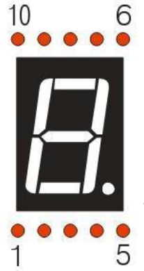

ESP32-S3 board
The brain that runs your uploaded sketch.
ESP32-S3 Lab · Day 21 of 30
Today the shift register earns its keep. You wire its eight outputs to a 7-segment display and upload a sketch that sends one byte per character, and the display counts 0 through F. Each byte is an encoding: eight bits that say which of the seven bars to light. Choosing a character is choosing the right byte, and the sketch keeps a table of them so it only has to look each up — the same three wires you ran on Day 20.
TSK-DAY21-SEVENSEG
Hand this to an agent so it can pull the lesson packet and coach you step by step.
01 First, know the pieces
Six things, and two of them are old friends from Day 20. Tap Define on any part you haven't met — the answer opens as a field note you can read and dismiss without losing your place.
The brain that runs your uploaded sketch.

Spreads the pins into rows you can reach and label.

Day 20's chip — takes a byte in on three wires and holds it on eight outputs.

Eight lit bars arranged as a figure — together they draw one character.

One per segment, each keeping its own current gentle.

Temporary, solder-free connections.
02 Make the physical circuit
The official Freenove diagram is your chart — schematic on top, the same circuit built on a breadboard below. Click it to enlarge. The three control wires are exactly where Day 20 left them; today's work is the eight resistor paths from the chip's outputs to the display's segments.
Mind the chip and the display's orientation. Seat the 74HC595 with its notch matching the diagram, and place the display the way the breadboard photo shows — its segments only line up with the right Q pins one way round. Unplug USB before you move any wire.
03 One action at a time
This is the main path — you can finish the day without opening a single field note. Tap each step as you go to keep your place.
Seat the ESP32-S3 on the GPIO extension board and keep USB unplugged while you wire.
Straddle the 74HC595 across the breadboard's centre gap with its notch matching the diagram — the same seat as Day 20.
Place the 7-segment display nearby the way the breadboard photo shows, and find its two common pins (3 and 8).
Run the three control wires — GPIO 12 to DS, GPIO 13 to ST_CP, GPIO 14 to SH_CP.
Wire each chip output Q0 through Q7 to its segment through its own 220 Ω resistor, following the diagram one row at a time.
Wire the display's common pins (3 and 8) to the positive rail so the shared anode has power.
Compare every wire to the chart before you plug in USB.
Open Sketch_15.1_1_Digit_7-Segment_Display.ino in Arduino IDE and upload it.
Watch the display count 0 through F, one character per second.
04 Read just enough code
The sketch keeps Day 20's writeData() helper word for word. The new piece is a table of sixteen bytes — one ready-made segment pattern per character — and a loop that sends them one per second. Switch to MicroPython if you'd rather see the same idea in Python — the wiring never changes.
int dataPin = 12; // Pin connected to DS of 74HC595（Pin14）
int latchPin = 13; // Pin connected to ST_CP of 74HC595（Pin12）
int clockPin = 14; // Pin connected to SH_CP of 74HC595（Pin11）
// Define the encoding of characters 0-F for the common-anode 7-Segment Display
byte num[] = {
0xc0, 0xf9, 0xa4, 0xb0, 0x99, 0x92, 0x82, 0xf8,
0x80, 0x90, 0x88, 0x83, 0xc6, 0xa1, 0x86, 0x8e
};
void setup() {
// set pins to output
pinMode(latchPin, OUTPUT);
pinMode(clockPin, OUTPUT);
pinMode(dataPin, OUTPUT);
}
void loop() {
// display 0-F on digital tube
for (int i = 0; i < 16; i++) {
writeData(num[i]);// Send data to 74HC595
delay(1000); // delay 1 second
writeData(0xff); // Clear the display content
}
}
void writeData(int value) {
// Make latchPin output low level
digitalWrite(latchPin, LOW);
// Send serial data to 74HC595
shiftOut(dataPin, clockPin, LSBFIRST, value);
// Make latchPin output high level, then 74HC595 will update the data to parallel output
digitalWrite(latchPin, HIGH);
}byte num[]The lookup table of segment patterns — sixteen bytes, one per character 0 through F, so num[i] is the ready-made encoding for character i. shiftOut(dataPin, clockPin, LSBFIRST, value)Clocks the byte into the chip one bit at a time — the same move as Day 20. writeData(0xff)All eight bits set to 1 means every segment off — this line blanks the display.delay(1000)Holds each character on the display for one full second. Optional side path · same circuit
from my74HC595 import Chip74HC595
lists =[0xc0, 0xf9, 0xa4, 0xb0, 0x99, 0x92, 0x82, 0xf8,
0x80, 0x90, 0x88, 0x83, 0xc6, 0xa1, 0x86, 0x8e]
chip = Chip74HC595(12,13,14)
for count in range(16):
chip.shiftOut(0,lists[count])
time.sleep_ms(500)Chip74HC595(12,13,14)A helper class wraps the chip — same three pins in the same order as the Arduino sketch.chip.shiftOut(0,lists[count])Sends one pattern byte; the 0 picks lowest-bit-first order, matching LSBFIRST in Arduino.Same chip, same table of bytes. This version paces at 500 ms per character and skips the blanking write between them, so it counts twice as fast. Run it in Thonny if MicroPython is set up; otherwise skip it — it should never block the Arduino-first path.
05 Understand, don't memorise
A seven-segment display doesn't understand the number 3. It only knows which of its bars are lit. Turning "3" into something it can show means deciding which segments to switch on, packing that decision into a byte, and handing that byte to Day 20's shift register. That translation from a numeral to a pattern of bits is the whole idea today, and a small lookup table carries it.
A single digit is drawn by seven bars, labelled a to g, plus a decimal point. Any numeral is a particular set of those bars switched on: a 7 lights three of them, an 8 lights all seven.
Give each segment its own bit and the whole on-off pattern fits in eight bits. On this display the bit order from the top down is DP G F E D C B A, so each bit owns exactly one bar.
The display is common anode: every segment shares the positive rail, so a bar lights when its bit is pulled LOW. A 0 turns a segment on and a 1 leaves it dark, which is why 0xff is a blank display.
There is no tidy formula from the numeral 3 to its segments, so the sketch stores the answer once. num[3] is the ready-made byte for a 3, and choosing which digit to show becomes choosing an entry from the table.
The 74HC595 sends whatever byte you hand it out onto its eight pins. Show a 3 by looking up num[3] and shifting that byte out — the same three wires as yesterday.
digit → index the table → one byte → eight segments → a shape you can read
Read 0xb0 as bits, 1011 0000, in segment order DP G F E D C B A. The 0 bits — G, D, C, B, A — are the lit bars, and A B C D G drawn together is a 3. Every entry in the table is one of these patterns worked out in advance.
Which bars a numeral lights follows no equation — a 2 and a 5 share almost nothing. Ten patterns cover 0 to 9 (this sketch keeps sixteen, adding A to F for hex counting), each stored once so the loop only has to index them.
Common anode ties every segment's positive side to the rail, so an output must sit LOW to let current flow and light its bar. That inverts the intuition: 0 is on, 1 is off, and all ones (0xff) shows nothing.
06 Know it worked
Nothing prints to the screen today — the proof is the count running on the display in front of you.
Lowercase b and d are deliberate — with all seven segments a capital B would read as 8 and a capital D as 0.
07 Make the idea yours
The table is the whole trick, so take it apart. Read one byte back into a shape, shorten the count to change the sequence, then hand-build a character the table never had — all on the working circuit, inside today's 30 minutes.
Take num[3] from the table — the byte 0xb0 — and write it out as bits, 1011 0000, in segment order DP G F E D C B A. The 0 bits are the lit bars, so mark them and you get G D C B A, which draws a 3. Watch the count reach 3 and confirm your reading matches the display.
Change the loop's for (int i = 0; i < 16; i++) to i < 10 and upload. The display now counts 0 through 9 and wraps, skipping A to F — you have changed the sequence by changing which table entries the loop walks.
Segments B C E F G draw an H, and in bit order DP G F E D C B A that pattern is the byte 0x89. Empty out loop(), add writeData(0x89) to the end of setup(), and check that the H holds steady from power-on.
08 Learn it with a hand on the tiller
Every lesson ships with a code and a machine-readable packet, so an agent can guide you with full context.
TSK-DAY21-SEVENSEG
How the agent should behave: guide one physical connection at a time, then teach the encoding underneath: how a numeral becomes a set of lit segments, how that set packs into one byte, and why a lookup table is the clean way to keep them. Explain terms on request, and always check wiring, board, port, and USB before changing code.